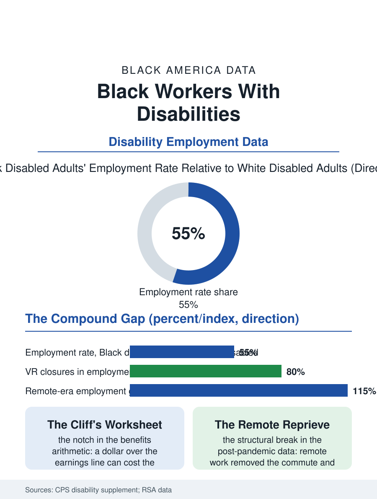

Black Employment
The Multiplied Gap: Black Workers With Disabilities
The gaps multiply rather than add, the benefits cliff prices the return, and remote work delivered the first structural gain in a generation. The disability employment file.

Black workers with disabilities face the employment file's compound arithmetic: the disability employment gap and the racial employment gap multiply rather than add, so that the Black disabled adult's employment rate is among the lowest of any group the federal surveys tabulate, and the vocational rehabilitation system's outcomes by race are its own audit. This article reads the disability employment file.
The Multiplied Gap
The Current Population Survey's disability supplement gives the file its stark base: the employment rate for Black adults with disabilities runs at roughly half the rate for white adults with disabilities and at a fraction of the nondisabled Black rate, the intersection the disability literature names as the data's deepest cell, composed of the impairment distribution itself, which the health file's burdens skew, the education and the occupational files' accumulated filters, and the discrimination the audit studies measure in both its forms, the callback experiments finding the disability disclosure's penalty and the race's in the same design. The benefits file is the system's frame: the disability insurance and the supplemental security rolls, on which Black beneficiaries are overrepresented by the health burden's arithmetic, carry the work rules whose cliffs and disregards price the return to work in the beneficiary's own calculus, the earnings limit's notch being the file's most consequential number, a dollar of wages over the line costing the benefit entire in the month's accounting under the substantial gainful activity test, a design whose reform proposals, the gradual offsets, are the file's standing legislation. The ticket and the work incentives programs built to soften the cliff post participation rates in the evaluations that measure the cliff's shadow better than its repair. The state variation is the file's natural experiment and its hope in one: the rehabilitation agencies whose outcomes by race converge are the ones whose leadership published the count and staffed the outreach, and the supported employment waivers' expansion states post the significant-disability employment gains the model's advocates promised, the variation proving the gap an administrative artifact in the states that chose to administer it away.
Rehabilitation's Audit
The vocational rehabilitation system, the state agencies that buy the training and the placement for the disabled worker, publishes its outcomes by the demographics this file names, and the audit literature's findings are the system's own: the Black applicant's acceptance, the services' depth, the closure in employment, and the closure's wage each trail the white applicant's in the agency data across most states and decades of the file, a pattern the system's counselors' discretion and the rationing order's priorities compose, and which the system's current equity initiatives address with the count finally published as a quality measure. The supported employment and the customized employment models, the job carved and coached for the worker with the significant disability, post their best results in the community programs whose staffs mirror the population's, the disability services workforce being, in the nonprofit file's pattern, substantially Black at the frontline and thin at the direction.
Work's Terms, Renegotiated
The disability employment file closes on the accommodation's era, because the remote work file's normalization rewrote the accommodation's economics for a class of impairments overnight, the commute and the office's physical plant having been the disability's largest employment taxes for the mobility and the immune and the sensory files, and the post-pandemic data show the disabled worker's employment rising on the remote margin in every demographic, the Black disabled worker's rise among them, the file's first structural improvement in a generation and the return-to-office file's contested ground in consequence. The self-employment file adjoins as the accommodation of last resort and often of first choice, the disabled Black proprietor's rate in the business data reflecting the workplace that fits because its owner built it. The surveys count the employment rates each year, the multiplied gap the headline. The file's last entry is the benefits counselor's worksheet, the cliff's arithmetic done honestly at the kitchen table of the beneficiary who wants the job and fears the notch, a worksheet whose numbers, reformed or not, decide more employment in this file than any employer's attitude, the system's own design being the disability's largest employer-side fact. The worksheet, in the states reforming it, is beginning to read like an invitation again.
More in Black Employment
The Black Unemployment Rate: The Two-to-One Pattern
Black unemployment runs at roughly twice the White rate — 5.5 percent against 3.3 percent in annual averages — a ratio stable across five decades of federal data. How it is measured and why it persists.
Black Median Weekly Earnings: The 80-Cent Ratio
Black full-time workers earn a median of about $900 a week — roughly 80 cents for every dollar White workers earn. The BLS earnings data by group, gender, and occupation.
Black Labor Force Participation: Working at National Rates
Black labor force participation runs at roughly the national rate — and Black women participate at higher rates than White women. The BLS participation data.
Source: Current Population Survey disability supplement; Rehabilitation Services Administration case service reports; disability employment research.